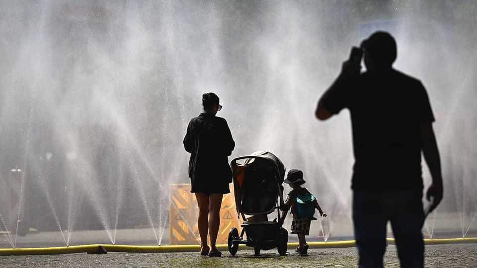

Politics
July 2nd 2026

The official death toll from two earthquakes that struck Venezuela on June 24th rose to 2,295, though that is expected to increase as more bodies are pulled out of collapsed buildings. With over 11,000 people injured and some hospitals damaged, the World Health Organisation said the country’s health system was under strain. An American general said 900 military personnel were helping search-and-rescue operations. Delcy Rodríguez, the interim president, described the earthquakes as Venezuela’s “most brutal natural catastrophe” ever, but anger mounted among Venezuelans about the government’s response. Many residents say the socialist state is providing little help.
Iran’s revolutionary guards attacked a Singapore-flagged ship as it left the Strait of Hormuz. America responded by bombing military targets in southern Iran, which then fired missiles and drones at Bahrain and Kuwait. American officials signalled that the fighting was over and that vessels could “move freely” through the strait. Donald Trump said he was satisfied with ordering one-off strikes on Iran when it violates the deal with America. Indirect negotiations between America and Iran continued.
Israel and Lebanon signed their first formal diplomatic agreement in 43 years, which in theory sets them on a path towards a lasting peace. The deal commits the Lebanese government to disarm Hizbullah, Iran's proxy in Lebanon. Israel would gradually withdraw from southern Lebanon, although not until the militants are uprooted. Hizbullah is not party to the agreement.
America’s Supreme Court struck down Mr Trump’s executive order that had denied citizenship to children born to illegal migrants or temporary residents. The court found that the constitution grants such rights, using reasoning that looked back as far as the concept of citizenship in English common law, “which crossed the Atlantic and prevailed in ‘each and all of the states’ after American independence”.
The court sided with Mr Trump in agreeing he could sack federal regulators, a big expansion of presidential powers. But it ruled that he could not fire Lisa Cook from the Federal Reserve’s board of governors, citing the central bank’s independence. A Fed governor can be “removed for cause” by a president, it found, “but that does not mean he may make that decision for any reason, or no reason”. And it also upheld a ban on transgender women competing in women’s college and school sports.
Democratic socialists caused another upset in America’s primary elections by ousting a 15-term Democratic congresswoman in Denver. Melat Kiros, who is 29 and came to America from Ethiopia as an infant, made opposition to Israel a focus of her victorious campaign. She has called Hamas’s attack on Israel in 2023 “inevitable” and refused to describe the firebombing of a march in Boulder last year in support of the hostages taken by Hamas as antisemitic.
Mr Trump’s financial disclosure for 2025 revealed that he reported $1.4bn in income from his family’s digital-currency assets. The president has relaxed regulation of the cryptocurrency industry since taking office. The White House said that neither he nor his family “has ever engaged, or will ever engage, in conflicts of interest”.
Police in South Africa arrested 900 people during big anti-migrant protests. One person was shot dead in Johannesburg amid the looting of shops owned by foreigners. The protests followed months of anti-foreigner mobilisation and marked a “deadline” set by vigilante groups for illegal migrants to leave the country. Shops and businesses remained closed in many cities.
Uganda’s army shut down newspapers and radio and TV stations owned by Nation, east Africa’s most influential media group, the latest sign of repression in the country. The closure was ordered by Muhoozi Kainerugaba, the army chief, who is also the president’s son and his likely successor. In a rant on X Mr Kainerugaba said “I don’t believe in a free press!”
Andy Burnham, who is likely to take over soon from Sir Keir Starmer as Britain’s prime minister, made a big policy speech in which he announced bold plans to relocate some governmental powers away from London. As part of his devolution vision, “Number 10 North” will be “the nerve centre of a rewired Britain” on a ten-year mission to rebalance the country. Regions would be tasked with producing “credible industrial ambitions”.
In one of his final acts as prime minister Sir Keir committed £15bn ($20bn) to Britain’s defence investment plan over the next four years. A third of the money is earmarked for drones and autonomous weapons systems. The plan had been delayed and the previous defence secretary resigned saying it wasn’t enough to modernise Britain’s defence capabilities. Mr Burnham will have to find £4.7bn to meet Sir Keir’s commitment.
South Korea announced that it would ramp up its production of drones, with around 11,000 to be produced this year alone. Drone and counter-drone units will be manned by some 500,000 “drone warriors” and tens of thousands of systems will be deployed across the front line with North Korea. Drones are now “a universal combat tool”, said the South Korean defence minister.
In response to a suicide-attack in Karachi that killed three federal rangers, Pakistan conducted air strikes across the border into Afghanistan. At least 28 civilians were killed, according to the UN’s local mission. Pakistan said it had targeted militant bases. In retaliation Afghanistan launched a drone attack against what it described as an Islamic State base in Pakistan’s border province of Balochistan.
A light aircraft crashed into the CITIC Tower, Beijing’s tallest building, killing the pilot. The plane hit the skyscraper just 7km (4 miles) from the closely guarded Zhongnanhai leadership compound of the Chinese government, raising questions about the lapse of security in China’s capital.
New Caledonia held its first election since deadly riots broke out in 2024 over plans to expand voting rights for French citizens who live in the Pacific-island territory, which would have diluted the voting power of locals (the proposal was shelved). Independence-minded parties won 26 seats in the 54-seat assembly and “loyalist” parties took 24, leaving the non-aligned centrists with four.
Ukraine launched another big attack on Moscow. Russia said it shot down more than 400 drones in the capital and elsewhere. Ukraine’s relentless assault on oil refineries has led to fuel shortages in some Russian regions, which Vladimir Putin now admits are causing “problems”. Russia hit Kyiv with another big bombardment, killing at least 17 people and injuring dozens more.
A parcel bomb exploded outside a residential property in Monaco, injuring three people. The injured were reported to be Vadym Iermolaiev, a Ukrainian tycoon, his 13-year-old child and a woman. Mr Iermolaiev was subjected to sanctions by the Ukrainian government in 2023 for allegedly conducting transactions with Russian entities. Born in Dnipro, he made his fortune in property but has since renounced his citizenship.
In an effort to kick-start growth, Germany’s chancellor, Friedrich Merz, unveiled a package of economic reforms, which includes €10bn ($11.4bn) in annual income tax relief. Negotiations between the governing Christian Democrats and the Social Democrats, their coalition partners, had been under way for weeks. “Citizens want decisions, not infighting”, said Mr Merz. The reforms should mean that firms will be able to hire more easily and bureaucracy will be slashed.
More than 1m illegal migrants have applied for citizenship in Spain under an amnesty programme. Migrants who have lived in the country for at least five months and do not have a criminal record will be granted temporary residence permits. When the amnesty was announced in January it was thought 500,000 would apply.

Europe’s sweltering heatwave subsided, but not before more local record temperatures were set. Germany recorded 41.70C (1070F) at Coschen near the Polish border. Poland hit 40.50C in the town of Slubice. The Czech Republic recorded a reading of 41.10C in Doksany, north of Prague.
Correction (July 2nd 2026): The details of Friedrich Merz’s economic reforms have been slightly amended.